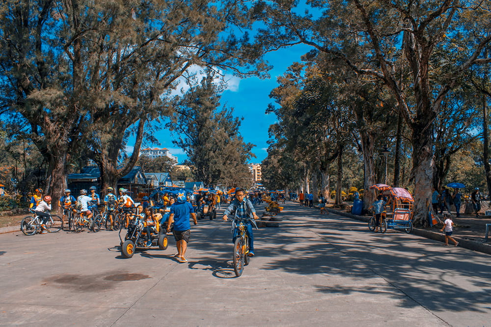
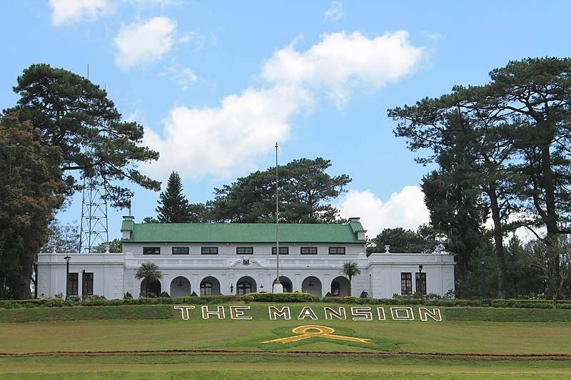
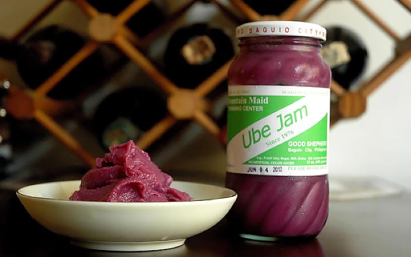
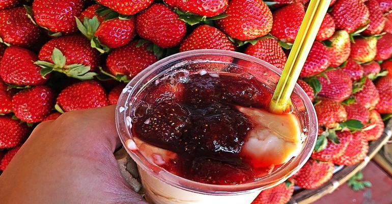
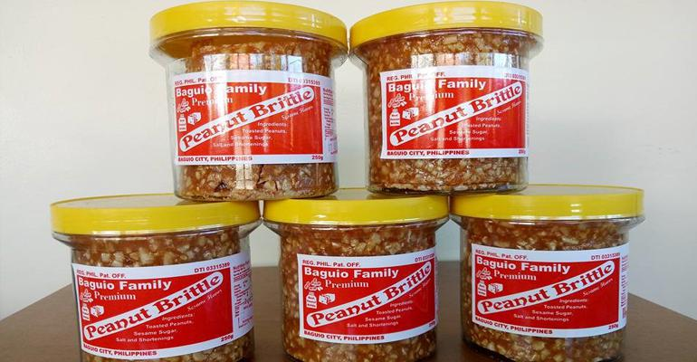

Summer Capital of the Philippines
Baguio City
One of the most celebrated cities in our country is the CIty of Pines and the Summer Capital of the Philippines, namely Baguio City. With a rich culture and heritage, Baguio City is the go-to place of people who wants to unwind, eat good food and chill out in a literal sense, because Baguio has a chilly weather so to speak.
Panagbenga Festival

One of the best times to go to Baguio is during the Panagbenga Flower Festival. With its colorful parade and display, the Panagbenga Flower Festival showcases the fun and colorful side of the residents of Baguio and the Cordilleras. It also promotes the beauty of the flowers that the city has. The term “Panagbenga” comes from a Kankanaey term meaning “season of blooming”. This festival reflects the history, traditions and values of Baguio and the Cordilleras. It lasts over a month long and flourishes through community spirit involvement.
Top 3 Must See Places in Baguio
Burnham Park

Burnham Park features a man-made lake known as Burnham Lagoon, wooded areas, and numerous flower beds. Roses, marigolds, daisies and hollyhocks are abundant in the area but an unusual sight in most parts of the country. The park also has a rose garden, a picnic grove, veterans’ park, a section called “Pine Trees of the World” and a Japanese Peace Tower. Of course, what makes it a hit to travelers are the swan boats that you can ride. Aside from boating, you can also jog and bike here.
The Mansion House

The Mansion House was built in 1908 to serve as the official summer residence of American Governors-General at the insistence of Governor-General William Cameron Forbes. The name is derived from the summer cottage in New England of Governor Forbes whose administration the original Mansion House was built under. Architect William E. Parsons, based on preliminary plans by architect Daniel H. Burnham,[2] the planner of the city of Baguio, designed the mountain retreat following the tenets of the City Beautiful Movement.[3] In 1910, the meeting of the Second Philippine Legislature was held at the Mansion House for three weeks. With its historical representation, the Mansion is a must see place if you love tracing back your roots and checkin
Our Lady of Lourdes Grotto

The Our Lady of Lourdes Grotto is a Catholic shrine that sits on Mirador Hill in Baguio City. It was constructed in 1913 mainly out of limestone that was used to build the Mirador Jesuit Villa. Inside the grotto, you will find the Our Lady of Lourdes statue. This sculpture was created by the famous artist Isabelo Tampingco using polychromed molave.
Aside from serving as a place of worship, many tourists flock here for the scenic view of Baguio City that the grotto offers. To reach the grotto, you will have to climb up a stairway made up of around 252 steps which took five years to complete.
However, it was later damaged in 1990 due to an earthquake that had affected Mirador Hill. Following the natural disaster, it was restored along with a center rail to provide assistance for elderly who wanted to visit the shrine. In 2007, a handicap route to the shrine was also laid out.
Ube Jam

If you're bringing home a taste of Baguio, Good Shepherd is your one-stop shop for all your pasalubong treats. Ube Jam, Strawberry Jam, and Peanut Brittle never fail to put a smile on any receiver’s face. It’s sweet and just outright fun to snack on. Eat the jams with bread or on its own. From personal experience, it's best to get an extra jar or two!
Strawberry Taho

Our favorite taho also gets its own twist in Baguio: with just a dollop of strawberry jam, the morning staple becomes a new favorite: strawberry taho. Most taho vendors in Burnham Park and other tourist spots sell this, and you better treat yourself to a cup too!
Peanut Brittle

When it comes to pasalubong from Baguio nothing beats the classic peanut brittle! If you can, get them from Good Shepherd brand or from Baguio Paradise, as they really know how to make a good jar of these sweet, glassy goodness. Romana’s has a version that uses whole peanuts instead of crushed nuts. For a different take on the classic dessert, get the cashew brittle.
Things to bring
- Sweater
- Camera
- Sneakers
- Sunglasses and Sunscreen
- Scarf
- Eco bag
Feedback Section